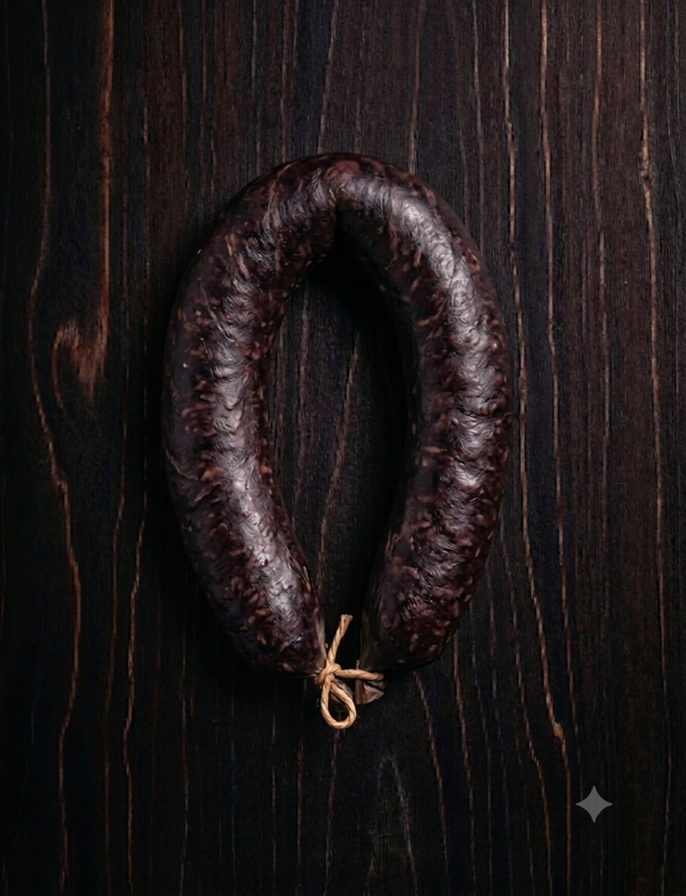

Morcilla
$10.000/kg
La Morcilla es el alma del asado. Dulce, especiada y con un toque
ahumado que no falla. En la Reserva la hacemos como en las viejas
parrillas: con receta tradicional y 0 vueltas.
Nuestra Morcilla está hecha con sangre fresca, grasa de pella,
cebolla, pasas de uva y un mix de especias secretas. Enbutida en
tripa natural y cocida a punto. Ni muy seca, ni muy blanda. justo
para que exploten en la parrilla.
Caracteristicas:
.Sabor: Dulce y especiada. El toque de pasas y canela la hace única. Bien ahumada por fuera.
.Textura: Jugosa por dentro, crocante por fuera. Se corta en rodajas de 2 dedos.
.Peso: Chorizos de 180gr a 220gr c/u. Vienen en sarta de 4 unidades.
.Ideal para: Parrilla a fuego medio. Pincharla 1 sola vez y dorarla de ambos lados. Es la entrada obligada antes del corte principal.
"No puede faltar en tu picada. Queda brutal con limon y pan casero. Marida con un Malbec joven o una birra bien fría"
Opiniones de Clientes
"La mejor morcilla que probé lejos. No es empalagosa como otras. Se nota que tiene buena grasa y está bien condimentada. En 15min en la parri ya está lista. Siempre pido dos sartas" - Hernan R. - Barrio Sur.
"Para mi marido no hay asado sin morcilla. Esta es la única que le gusta por que no es pura grasa. Viene bien cerrada al vacío y dura un montón en el frizzer. Recomendada." - Micaela R. - Villa Muñeca.
"Buen tamaño, Buen condimento, no se desarma en la parrilla. El secreto es no apurarla. A fuego lento queda perfecto." - Jorge A. - 20 de Junio.